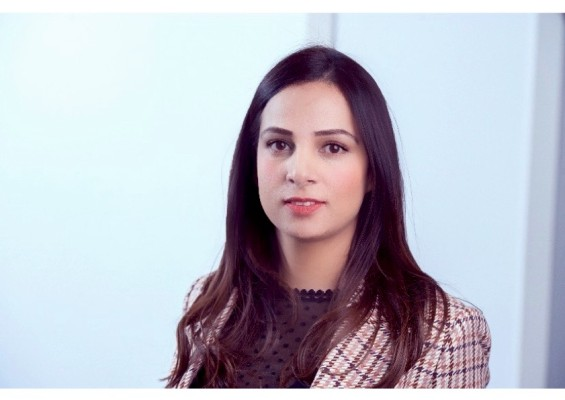

Turning evidence into everyday practice.
Dr. Shalini Ahuja, Senior Lecturer in Rehabilitation Systems and Implementation Science, King's College London, working at the point where good evidence meets real health services.
Most research never reaches the people it's meant for. My work is about closing that gap, study by study, service by service.
A short version of the story
Clinician-trained, systems-focused. Now working across academia and practice.
I trained as a physical therapist, with clinical experience in rehabilitation services. My Master's and PhD, at the University of Leeds and King's College London, took me into hospital administration, health management planning and policy, and mental health services research. Along the way, I've worked across mental health systems, antimicrobial resistance, and maternity and neonatal care in England, India, South Africa, Ghana, Nepal, Ethiopia, and Uganda.
That path shapes how I think: I'm less interested in evidence for its own sake, and more in whether it survives contact with a real, understaffed, overstretched service.
My work sits across implementation science, health equity, and mixed methods, using frameworks like CFIR, NPT, realist methods, and Proctor's taxonomy to design studies that don't just prove something works, but explain why, for whom, and under what conditions.
Alongside research, I teach, mentor, and coach students, and supervise the next generation of people doing this work, leading modules across several MSc programmes and supervising PhD students, because the field grows one well-trained researcher at a time.
- Role
- Senior Lecturer, King's College London
- Faculty
- Nursing, Midwifery & Palliative Care
- Based in
- London, UK

Where the work lives
Four lenses I return to, often in combination, on any given project.
Implementation science
Using CFIR, NPT, and Proctor's taxonomy to understand why interventions succeed or stall in practice.
Health equity
Designing research and services so that benefit doesn't quietly concentrate among those already best served.
Mixed methods analysis
Including surveys, meta-analysis, in-depth interviews, and framework analysis to surface what any single method misses.
Rehabilitation systems
Working with services and policymakers to move findings from a single study into standard practice.
Selected work
A few projects worth a closer look.
-
NIHR
D-Stress ProgrammeResearch programme on diabetes distress, King's College London.↗
-
Wellcome Trust
INKLUDEResearch programme, King's College London.↗
-
NIHR
CORE ProgrammeResearch programme, King's College London.↗
-
NIHR ARC South London
Mental Health Implementation NetworkImplementation science network, NIHR Applied Research Collaboration South London.↗
My coaching services
One-to-one coaching alongside my research and teaching work.
Career Coaching
Support for researchers, clinicians, and early-career academics navigating career transitions, grant strategy, and professional development.
Book via emailWellness Coaching
One-to-one coaching focused on sustainable wellbeing, balance, and resilience alongside demanding academic or clinical careers.
Book via email"I just wanted to thank you for our meeting that day and the tips you gave me, because I finally got my first (although temporary) role as a Research Assistant through King's, and I wanted to share the same with you!"
Mentee, Research AssistantThinking about a PhD?
I'm always happy to talk to prospective students.
I'm always ready to have a chat with prospective PhD students thinking of working in these areas. If any of the below resonates with a project you're developing, get in touch.
Advancing implementation science research methods.
Expanding frailty assessment and management.
Strengthening rehabilitation systems in LMICs.
Integrating mental and physical health services.
Get in touch
Open to collaboration, speaking, and PhD enquiries.